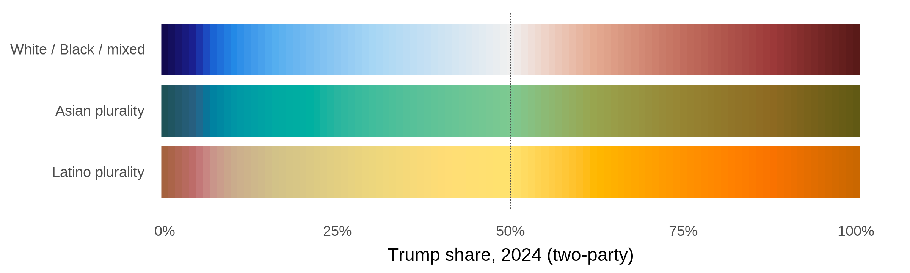

```{=html}
<!-- generated by code/atlas/national/04_page.R (ATLAS_SCHEME=fused): edit there, not here -->
<figure class="fk">
<figcaption>Every bloc starts on the top ramp, by its Trump 2024 two-party share; group rows show the same ramp with the group colour fused in.</figcaption></figure>
<style>.fk { margin: .5rem 0 1.5rem; max-width: 100%; } .fk img { width: 100%; height: auto; } .fk figcaption { font-size: .8rem; color: #666; }</style>
```
